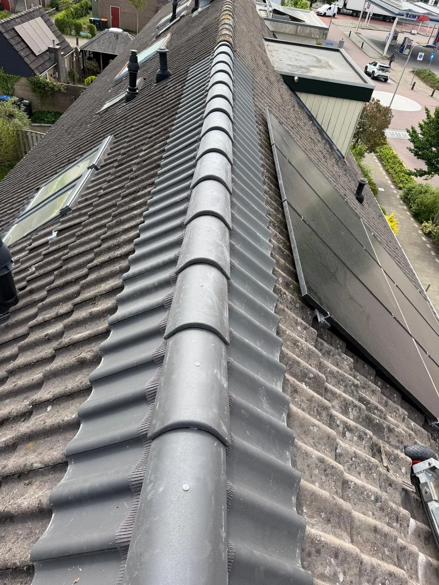

Pannendak
Een gebroken pan, verschoven pannen of een nok die loszit. Wij vervangen losse pannen of leggen het hele dak opnieuw, met nieuwe folie en tengels als dat nodig is.
- +Gebroken en losse pannen
- +Nokvorsten vastzetten of vervangen
- +Dakvervanging met nieuwe pannen
- +Oude pannen afgevoerd